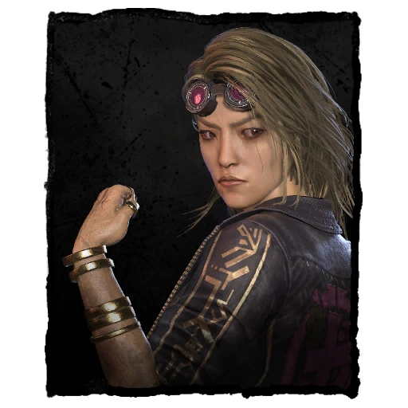
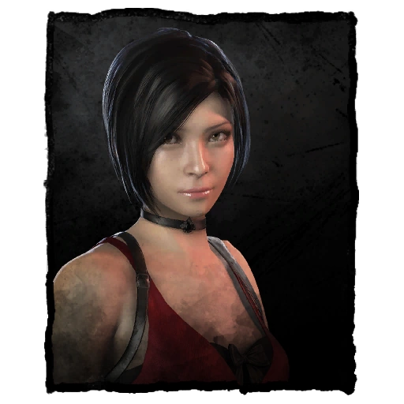
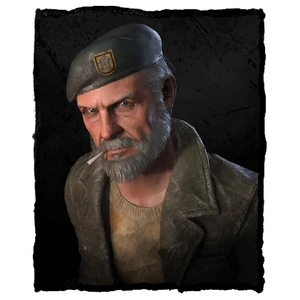
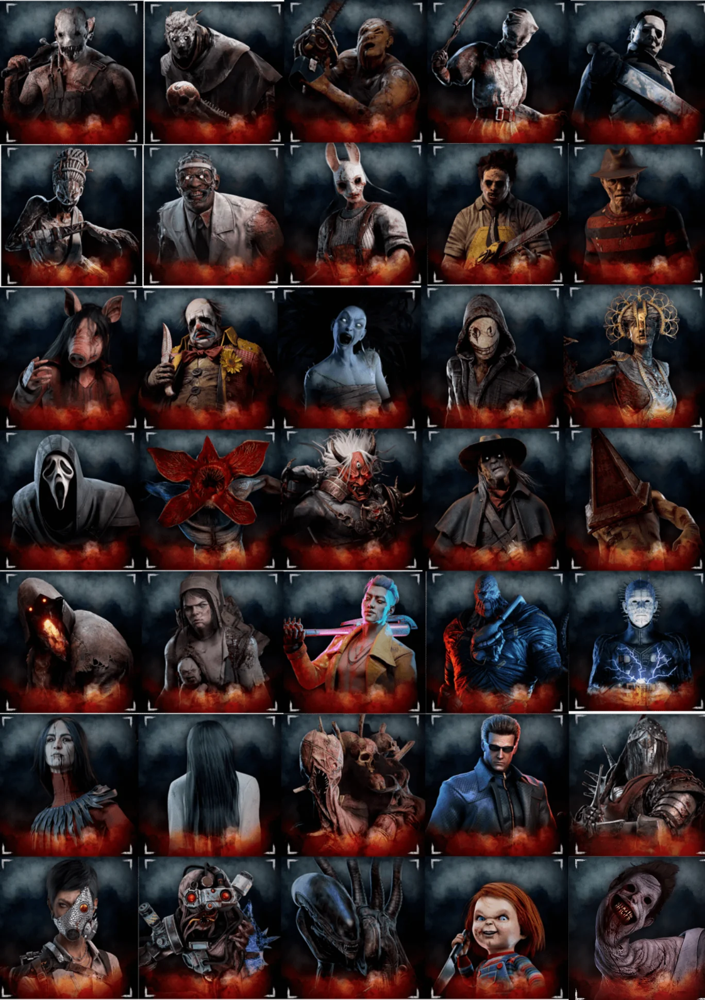

SOBRE O JOGO
Dead by Daylight é um multiplayer online para até cinco jogadores, onde quatro formam o time de sobreviventes e um será o assassino. Como um time, você deverá escapar da morte pelas garras do killer, mas como perseguidor, seu objetivo é impedir que a equipe saia com vida, com uma partida que acontece,grande parte das vezes, durante 30 minutos.
SOBREVIVENTES



Em "Dead by Daylight", os sobreviventes são personagens que buscam escapar de um assassino em um ambiente aterrorizante. Seu objetivo principal é reparar geradores para abrir a porta de saída e fugir do mapa. Cada sobrevivente possui habilidades únicas, chamadas "perks", que podem ajudar a melhorar suas chances de sobrevivência, como aumentar a furtividade ou acelerar o conserto de geradores. Os sobreviventes também podem se curar, resgatar aliados e usar itens para se defender. O jogo exige trabalho em equipe, estratégia e, muitas vezes, sacrifícios para garantir que alguns consigam escapar. A tensão e a dinâmica de perseguição são centrais para a experiência.
KILLERS
Os killers em "Dead by Daylight" são os antagonistas que perseguem os sobreviventes, cada um com suas próprias habilidades e estilos de jogo. O objetivo dos killers é capturar e sacrificar os sobreviventes para alimentar uma entidade maligna. Cada killer possui "perks" únicas que proporcionam vantagens, como aumentar a velocidade de movimento ou dificultar a fuga dos sobreviventes. O jogo envolve estratégias de perseguição e armadilhas para eliminar os sobreviventes antes que eles consigam consertar todos os geradores. A pressão psicológica e a tática são essenciais para criar momentos de tensão e medo. A interação entre killers e sobreviventes é o que torna o jogo tão dinâmico e emocionante.

PERKS